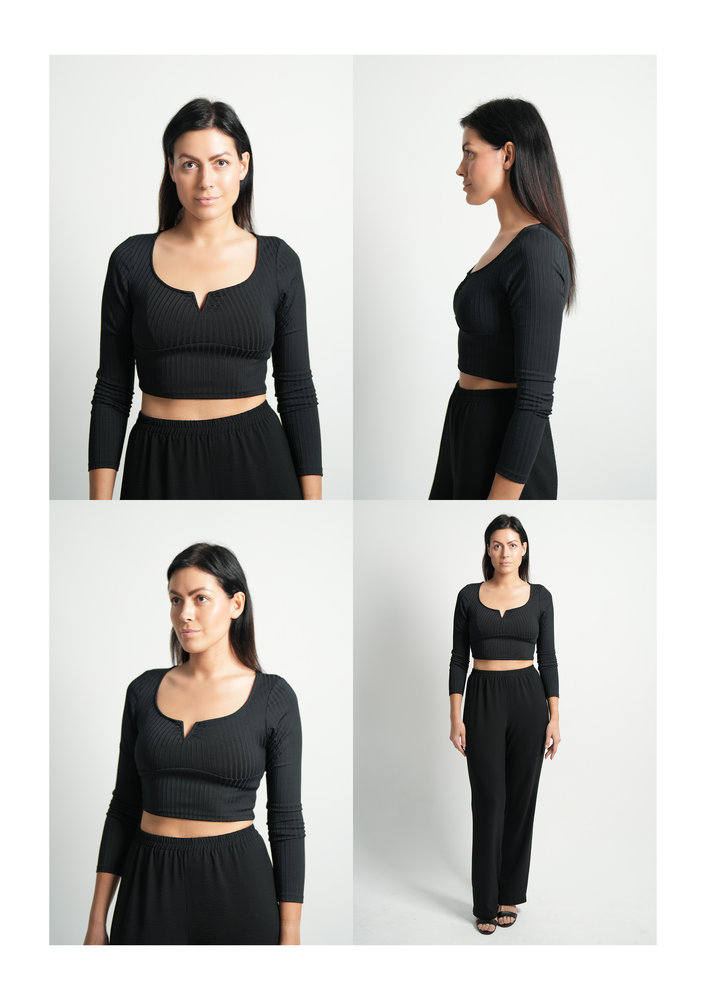

If you want to apply for modeling in Dubai, your photos are your first interview. Most are not rejected because the model is wrong. They are passed over because the photos make a quick decision hard.
A booker, casting director or client may look at a lot of applications in a short time. If your first image is cropped too tight, your full-length is missing, or the files look filtered and years old, they have to guess. Many people will not guess. They will move on to the next application.
The good news is that almost everything below can be fixed in an afternoon with a phone, a plain wall and a friend. I am Hatim, a Dubai portrait and model portfolio photographer, and these are the seven problems I would check first before you send photos to a modeling agency in the UAE, to a client, or to the Photoczaro Models roster.
The 7 mistakes at a glance
- Filters and heavy retouching Natural photos stop being useful once they are altered.
- No clear full-length photo A face-only gallery hides your proportions.
- Photos that do not match how you look now Old photos break trust at the casting.
- Too many photos and no clear first image Select your best frames instead of dumping everything.
- Styling that hides you Oversized layers and busy backgrounds hide your shape.
- Files that arrive damaged Screenshots, compressed forwards and sideways images.
- Missing basics and ignored instructions Incomplete applications get set aside.
Nobody can promise that fixing your photos will get you signed or booked. What they do is remove the avoidable reasons to say no, so your look, your proportions and your potential can actually be judged.
1. Filters and heavy retouching
Beauty filters, skin smoothing, reshaped jawlines and heavy colour grading are the most common reason natural photos stop being useful. The reviewer is trying to see your real skin, features and proportions. If the image has been altered, the useful information has been removed and the next question is whether you look like this in person.
The fix: switch off every filter and beauty mode before you shoot, and do not retouch reference photos. A straight crop and a size reduction for the upload form are fine. If an agency asks for natural images, send natural images. My guide to model digitals and model portfolios in Dubai explains what each format is for.
2. No clear full-length photo
Face-only galleries are very common. A reviewer also needs to see your proportions, posture and overall shape, and they cannot do that from a close-up or a heavily cropped frame. Tight selfie-style crops and wide landscape frames that cut off the body cause the same problem.
The fix: include at least one standing, head-to-feet photograph in portrait orientation, with your feet in the frame and space around you. Add a clear headshot and a half-body image, and use a plain background so nothing competes with you.

A simple digitals sheet: front, profile, three-quarter and full-length. Plain background, fitted clothing, no retouching. Shot by Photoczaro in Dubai.
3. Photos that do not match how you look now
If you changed your hair colour, cut your hair, lost or gained weight, or got a visible tattoo since your photos were taken, those images are no longer an honest introduction. The first time you arrive at a casting and look different, trust takes a hit.
The fix: use recent photos, and retake them whenever your look changes noticeably. Some agencies set their own limit; CM Models, for example, asked for photographs no more than three months old when I last checked. When you are approaching several agencies, follow the strictest instruction.
4. Too many photos, and no clear first image
Sending forty images and hoping one lands is a bad trade. Near-duplicates dilute your strongest frame, and a weak photo in the set can undermine the rest. The first thing someone sees often decides whether they keep looking.
The fix: select, do not dump. Choose the strongest clean headshot as the first image, then a half-body and a full-length. Remove anything that repeats another photo. If a photo is only there because you like how you look in it, it probably does not belong. If you later want a styled set, a model test shoot in Dubai can add range without repeating what you already have.
5. Styling that hides you
Oversized clothes, bulky layers, busy patterns, large logos, hats, sunglasses, heavy makeup and cluttered backgrounds all pull attention away from you. The same goes for a messy room behind you or objects that look like they are growing out of your head.
The fix: wear simple, fitted clothing in a plain colour, keep makeup minimal, pull your hair back if the instructions ask for it, and stand in front of a clean wall. Ford's own scouting guidance asks for a clean face, pulled-back hair and form-fitting clothing, which is a good default to copy. For outfit ideas, see what to wear for a photoshoot in Dubai.
6. Files that arrive damaged
Screenshots, photos forwarded through chat apps that compress them, blurry frames, low-light grain, tiny thumbnails and sideways images all make a decent photo look worse than it is. A clean photo that arrives as a compressed, rotated thumbnail has not done its job.
Dubai adds its own lighting problem. Outdoor midday sun is harsh and creates hard shadows across the face, and indoor spaces can have mixed warm and cool light. Neither shows your natural skin tone.
The fix: shoot near a large window or in open shade, use the normal rear camera, and send the original files through the application form or by email instead of screenshots. Check that every image opens the right way up before you submit. The same light principles are covered in my guide to shooting portraits in Dubai heat.
7. Missing the basics and the instructions
Applications get set aside when they are incomplete: no height or measurements, no contact details, no city, no mention of whether you live in the UAE, or photos in a format the application did not ask for. Another common problem is sending a general set when the agency asked for something specific.
The fix: read the application instructions again before you press send. Include your name, accurate measurements, location and the best way to reach you, and keep to the image count, order and orientation requested. Requirements differ by agency and change over time, so check each page at the time you apply. My list of the best modeling agencies in Dubai shows how to approach each one, and a model comp card is the next step once your photos are strong.
A five-minute check before you send
- Are the photos current? They should look like you if you walked into a casting today.
- Is there a clear headshot, half-body and full-length? Portrait orientation, feet in frame.
- Are they unfiltered and unretouched? A straight crop and resize only.
- Is the background plain and the light even? No harsh patches of sun, no clutter.
- Is your best image first? Remove anything that repeats another photo.
- Do the files open the right way up? No screenshots and no heavily compressed forwards.
- Did you follow the instructions? Count, order, orientation and the basics they ask for.
When a professional shoot is worth it
You do not need a photographer for a first application. Clean phone photos taken with the steps above are often enough, and my guide to starting modeling in Dubai with no experience covers the rest of the first steps. A professional session starts to help when you want consistent lighting and framing, when you are building portfolio images that show expression and movement beyond plain digitals, or when you want direction through the poses with someone watching what the camera sees.
If that applies to you, share what the agency or client asked for and the images you already have. I would rather tell you honestly that you can fix it yourself than sell you a session you do not need. You can see how I work on my model portfolio photographer in Dubai page, and the difference between simple reference photos and a styled portfolio is explained in Model Digitals vs Model Portfolio.
Frequently Asked Questions
Requirements change, so always check the live agency page before applying. Agency guidance referenced: CM Models application and Ford Models Get Scouted. Photoczaro is not affiliated with, approved by or recommended by any agency named above.
Hatim Champeli is a Dubai-based portrait and model portfolio photographer, available across the UAE. His work has appeared in international magazines. Read more about Photoczaro.
Your next step: apply to the roster
Better photos only help if someone sees them. Once your headshot, half-body and full-length photos are current, natural and clean, send them in. Photoczaro Models is a UAE roster that clients can book models from, and the application form is the quickest way to put your photos in front of them.
Apply to Photoczaro Models
Free to apply, non-exclusive and open to anyone aged 18 or over who lives in the UAE. You only need simple, current photographs. Applying does not guarantee acceptance or bookings, and paid photography is never a condition.
Want to see how the roster works first? Read how to book models from the Photoczaro roster.